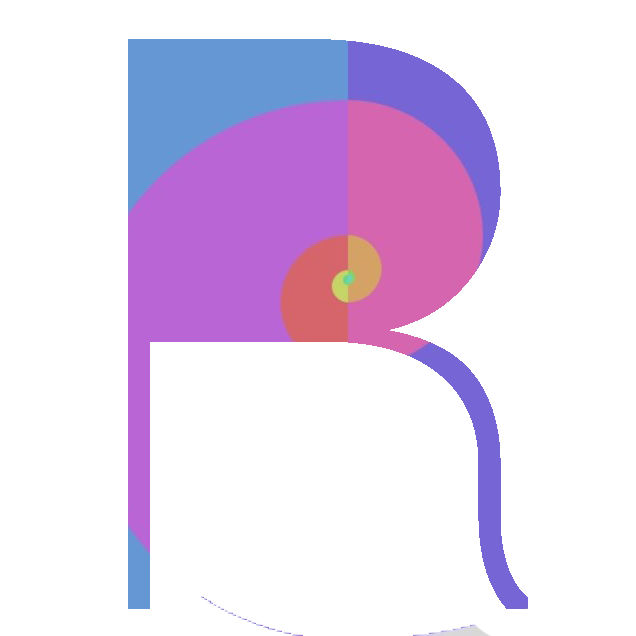

Framework Dedicated to design v1.0
Design Overview
Design is the base of webpages, every design has some mystery behind it, many designers design webpage to achieve what they want specially using design composition rules or any ideas they have, Relative Design is a CSS framework which can relates your each div container in golden ratio using different rows and column by setting their viewport
All we do in a web page is, Scroll, Slide, Hover and Touch, Relative design will not only improve your design, it has the some intracting components which you can change your intractions related to Scroll, Slide, Hover and Touch
Design with the beauty of golden ratio
Completely responsive with every aspects